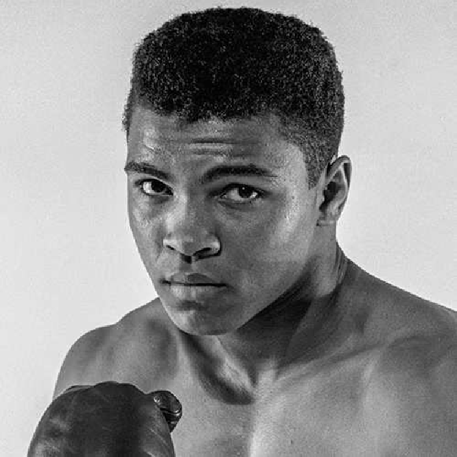

"Float like a butterfly, sting like a bee – Muhammad Ali, a legend in and out
of the ring."
Timeline of Muhammad Ali's Life
1942: Born Cassius Marcellus Clay Jr. on January 17 in Louisville, Kentucky.
1954: Began boxing at age 12 after his bike was stolen, trained by Joe Martin.
1960: Won the Olympic gold medal in light heavyweight boxing in Rome, becoming a
national hero.
1964: Defeated Sonny Liston to become the youngest heavyweight champion at the time
(age 22); converted to Islam and changed his name to Muhammad Ali.
1965: Successfully defended his title in a rematch against Sonny Liston, cementing
his dominance in boxing.
1967: Refused induction into the U.S. Army, citing opposition to the Vietnam War
and religious beliefs; was stripped of his titles and banned from boxing for nearly four years.
1970: Returned to the ring after the U.S. Supreme Court allowed him to fight,
marking his comeback with a win against Jerry Quarry.
1971: Fought Joe Frazier in the "Fight of the Century," suffering his first
professional loss but gaining immense respect for his performance.
1974: Staged an incredible comeback, defeating George Foreman in the "Rumble in the
Jungle" in Zaire to reclaim the heavyweight title.
1975: Battled Joe Frazier in the brutal "Thrilla in Manila," winning the match and
concluding one of the greatest rivalries in sports history.
1978: Lost the heavyweight title to Leon Spinks but regained it in a rematch,
becoming the first boxer to win the heavyweight title three times.
1980: Fought Larry Holmes in a controversial bout; his health began visibly
declining, marking the end of his competitive career.
1981: Retired from boxing after losing to Trevor Berbick, ending with a record of
56 wins (37 by knockout) and 5 losses.
1984: Diagnosed with Parkinson’s syndrome, likely caused by the physical toll of
his boxing career.
1990: Played a role in freeing American hostages from Iraq, showcasing his
influence as a global humanitarian.
1996: Lit the Olympic flame at the Atlanta Games, symbolizing resilience and his
role as a unifying global figure.
2005: Awarded the Presidential Medal of Freedom, the highest civilian honor in the
U.S., for his contributions to sports, civil rights, and humanitarian efforts.
2016: Passed away on June 3 in Scottsdale, Arizona, at age 74 due to septic shock,
leaving a lasting legacy as a sports legend and advocate for justice, peace, and equality.